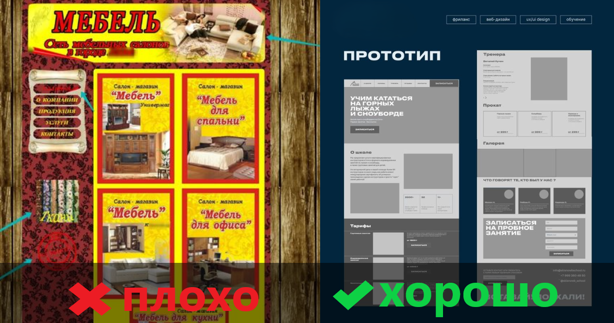
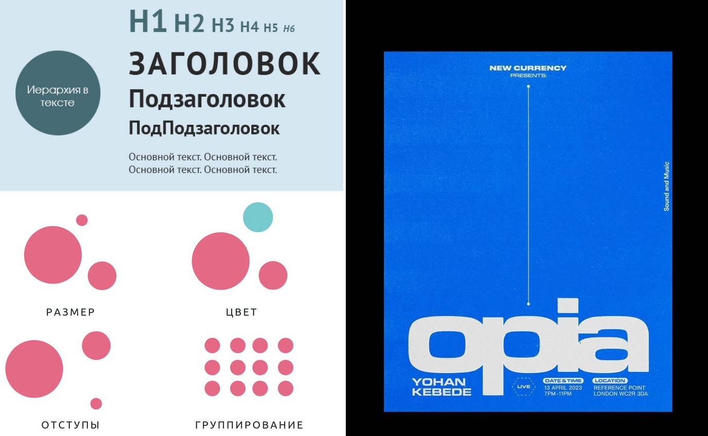
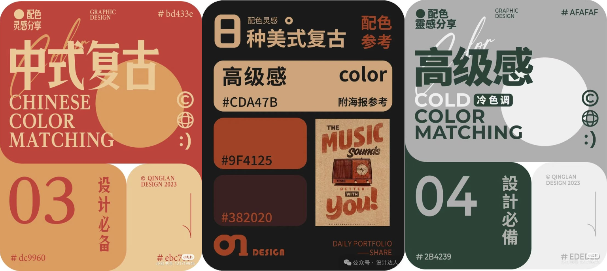
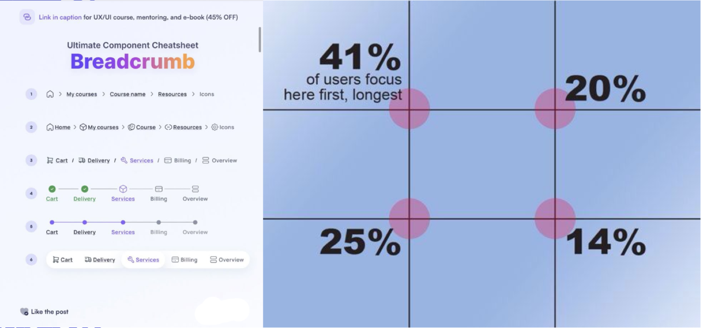

Три секретных ингредиента для сайта, которые полюбят ваши клиенты!
У вашего сайта пыльные полки и скучные вывески? Он как лабиринт, где посетители теряются и уходят ни с чем? Не беда! Даже простые изменения могут превратить его в магнит для для клиентов. Вот три секретных ингредиента для преображения:
1. Визуальная иерархия: Расставьте акценты, как режиссер в кино!
Представьте, что ваш сайт – это захватывающий фильм. Режиссер не просто показывает все подряд, он расставляет акценты! Крупные планы, яркий свет – все, чтобы зритель не пропустил главное. На вашем сайте все точно так же!
Заголовки-звезды:
Пусть заголовки “кричат” о самом важном! Сделайте их большими, жирными и яркими. Это как огромные афиши, которые сразу привлекают внимание.
Кнопки-супергерои:
Кнопки “Купить”, “Заказать”, “Подписаться” должны сиять как новогодняя елка! Используйте яркие цвета, чтобы они не затерялись среди текста.
Белый цвет – ваш лучший друг:
Не бойтесь пустоты! Белое пространство вокруг важных эразные шрифты для заголовков и основного текста. Это как разные голоса в фильме! Главное – чтобы все было легко читаемым.
Шрифты с характером:
Используйте разные шрифты для заголовков и основного текста. Это как разные голоса в фильме! Главное – чтобы все было легко читаемым.
Визуальная иерархия – это как навигатор, который ведет пользователя по сайту самым коротким и приятным путем!
2. Цвета: Раскрасьте свой мир, как художник!
Цвета – это магия! Они могут вызывать эмоции, создавать настроение и даже влиять на решения. Правильно подобранные цвета могут сделать ваш сайт незабываемым!
Не будьте как радуга:
Не перебарщивайте! Выберите 2-3 основных цвета и несколько акцентных. Это как музыкальная группа: нужна гармония!
Узнайте секреты цветового круга:
Комплиментарные цвета (например, красный и зеленый) – как взрыв эмоций! Аналогичные цвета (например, синий и голубой) – как спокойствие и гармония.
Учитывайте свою аудиторию:
Яркие цвета – для молодежи, пастельные – для мам с детьми, строгие – для бизнесменов.
Цвет вашего логотипа – ваш главный герой:
Используйте цвета логотипа, чтобы подчеркнуть свою уникальность.
Цвета – это ваш шанс рассказать историю своего бренда без слов!
3.(breadcrumbs)Хлебные крошки: Не дайте пользователям заблудиться в лесу информации!
Представьте, что ваш сайт – это огромный лес. Как не заблудиться? Конечно, оставить за собой хлебные крошки!
Хлебные крошки – это навигатор для ленивых:
Они показывают пользователю, где он находится и как вернуться назад.
Расположите их под навигационным меню:
Как компас, который всегда под рукой!
“Главная > Блог > Статья” – это магия простоты:
Чем проще, тем лучше!
Все, кроме последней, должны быть ссылками:
Как указатели на дороге!
Хлебные крошки – это как добрый друг, который всегда поможет найти дорогу домой!
Итог? Красивый и удобный сайт, который полюбят ваши клиенты!
Эти три простых секрета помогут вам превратить свой сайт в мощный инструмент для бизнеса. Не бойтесь экспериментировать, ведь даже небольшие изменения могут принести огромные результаты! Помните: главное – это сделать ваш сайт удобным, красивым и понятным для пользователей. Удачи!